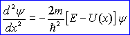

Kolejnym fizykiem godnym zapamiętania jest Erwub Rudolf Josef Alexander Schrödinger
Urodził się 12 sierpnia 1887r. w Wiedniu w Australii.
W 1933r. został laureatem Nagrody Nobla z dziedziny fizyki za pracę nad matematycznym formułowaniem mechaniki falowej
Opracował on model atomu nazwany "Modelem atomu Schrodingera"
Określa on prawa ruchu falowego cząstek w dowolnym układzie mikroskopowym
Schrödinger sformułował równanie opisujące zachowanie się funkcji falowej dowolnego układu
Ma ono postać:

Gdzie:
E jest energią całkowitą cząstki, U(x) energią potencjalną cząstki zależną od jej położenia, a h = h / 2π
W modelu tym szczególną uwagę zwraca sie na elektrony, które tworzą chmurę elektronową. Można mówić o prawdopodobieństwie znalezienia elektronu naokoło jądra, nie o jego krążeniu po orbitach